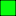
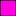

<!doctype html>
<html lang="en">
    <head>
        <meta charset="utf-8">
        <meta http-equiv="X-UA-Compatible" content="IE=edge">
        <meta name="viewport" content="initial-scale=1,user-scalable=no,maximum-scale=1,width=device-width">
        <meta name="mobile-web-app-capable" content="yes">
        <meta name="apple-mobile-web-app-capable" content="yes">
        <link rel="stylesheet" href="css/leaflet.css" />
        <link rel="stylesheet" type="text/css" href="css/qgis2web.css">
        <link rel="stylesheet" href="css/label.css" />
        <link rel="stylesheet" href="css/MarkerCluster.css" />
        <link rel="stylesheet" href="css/MarkerCluster.Default.css" />
        <link rel="stylesheet" href="http://k4r573n.github.io/leaflet-control-osm-geocoder/Control.OSMGeocoder.css" />
        <script src="js/leaflet.js"></script>
        <script src="js/OSMBuildings-Leaflet.js"></script>
        <script src="js/leaflet-hash.js"></script>
        <script src="js/label.js"></script>
        <script src="js/Autolinker.min.js"></script>
        <script src="http://k4r573n.github.io/leaflet-control-osm-geocoder/Control.OSMGeocoder.js"></script>
        <script src="js/leaflet.markercluster.js"></script>
        <style>
        #map {
            width: 864px;
            height: 761px;
        }
        </style>
        <title></title>
    </head>
    <body>
        <div id="map">
        </div>
        <script src="data/json_allwayosmschoolNO0.js"></script>
        <script src="data/json_allwayosmschoolNULL1.js"></script>
        <script src="data/json_allwayosmschoolUN2.js"></script>
        <script src="data/json_allwayosmschoolNEW3.js"></script>
        <script src="data/json_allwayosmschoolBF4.js"></script>
        <script src="data/json_allwayosmschoolLES5.js"></script>
        <script src="data/json_allwayosmschoolSL6.js"></script>
        <script src="data/json_allwayosmschoolEP7.js"></script>
        <script src="data/json_todo8.js"></script>
        <script>
        var highlightLayer;
        function highlightFeature(e) {
            highlightLayer = e.target;

            if (e.target.feature.geometry.type === 'LineString') {
              highlightLayer.setStyle({
                color: '#ffff00',
              });
            } else {
              highlightLayer.setStyle({
                fillColor: '#ffff00',
                fillOpacity: 1
              });
            }
        }
        L.ImageOverlay.include({
            getBounds: function () {
                return this._bounds;
            }
        });
        var map = L.map('map', {
            zoomControl:true, maxZoom:28, minZoom:1
        }).fitBounds([[40.2413594609,-74.7858256923],[40.3593104839,-74.651825851]]);
        var hash = new L.Hash(map);
        map.attributionControl.addAttribution('<a href="https://github.com/tomchadwin/qgis2web" target="_blank">qgis2web</a>');
        var feature_group = new L.featureGroup([]);
        var bounds_group = new L.featureGroup([]);
        var raster_group = new L.LayerGroup([]);
        var basemap0 = L.tileLayer('http://{s}.tile.openstreetmap.org/{z}/{x}/{y}.png', {
            attribution: '&copy; <a href="http://openstreetmap.org">OpenStreetMap</a> contributors,<a href="http://creativecommons.org/licenses/by-sa/2.0/">CC-BY-SA</a>',
            maxZoom: 28
        });
        basemap0.addTo(map);
        var initialOrder = new Array();
        var layerOrder = new Array();
        function stackLayers() {
            for (index = 0; index < initialOrder.length; index++) {
                map.removeLayer(initialOrder[index]);
                map.addLayer(initialOrder[index]);
            }
        }
        function restackLayers() {
            for (index = 0; index < layerOrder.length; index++) {
                layerOrder[index].bringToFront();
            }
        }
        layerControl = L.control.layers({},{},{collapsed:false});
        function pop_allwayosmschoolNO0(feature, layer) {
            layer.on({
                mouseout: function(e) {
                    layer.setStyle(doStyleallwayosmschoolNO0(feature));

                },
                mouseover: highlightFeature,
            });
        }

        function doStyleallwayosmschoolNO0(feature) {
            return {
                weight: 1.04,
                color: '#000000',
                fillColor: '#ff0112',
                dashArray: '',
                lineCap: 'square',
                lineJoin: 'bevel',
                opacity: 1.0,
                fillOpacity: 1.0
            };
        }
        var json_allwayosmschoolNO0JSON = new L.geoJson(json_allwayosmschoolNO0, {
            onEachFeature: pop_allwayosmschoolNO0,
            style: doStyleallwayosmschoolNO0
        });
        layerOrder[layerOrder.length] = json_allwayosmschoolNO0JSON;
        bounds_group.addLayer(json_allwayosmschoolNO0JSON);
        initialOrder[initialOrder.length] = json_allwayosmschoolNO0JSON;
        feature_group.addLayer(json_allwayosmschoolNO0JSON);
        function pop_allwayosmschoolNULL1(feature, layer) {
            layer.on({
                mouseout: function(e) {
                    layer.setStyle(doStyleallwayosmschoolNULL1(feature));

                },
                mouseover: highlightFeature,
            });
        }

        function doStyleallwayosmschoolNULL1(feature) {
            return {
                weight: 1.04,
                color: '#000000',
                fillColor: '#fb3318',
                dashArray: '',
                lineCap: 'square',
                lineJoin: 'bevel',
                opacity: 1.0,
                fillOpacity: 1.0
            };
        }
        var json_allwayosmschoolNULL1JSON = new L.geoJson(json_allwayosmschoolNULL1, {
            onEachFeature: pop_allwayosmschoolNULL1,
            style: doStyleallwayosmschoolNULL1
        });
        layerOrder[layerOrder.length] = json_allwayosmschoolNULL1JSON;
        bounds_group.addLayer(json_allwayosmschoolNULL1JSON);
        initialOrder[initialOrder.length] = json_allwayosmschoolNULL1JSON;
        feature_group.addLayer(json_allwayosmschoolNULL1JSON);
        function pop_allwayosmschoolUN2(feature, layer) {
            layer.on({
                mouseout: function(e) {
                    layer.setStyle(doStyleallwayosmschoolUN2(feature));

                },
                mouseover: highlightFeature,
            });
        }

        function doStyleallwayosmschoolUN2(feature) {
            return {
                weight: 1.04,
                color: '#000000',
                fillColor: '#f4050d',
                dashArray: '',
                lineCap: 'square',
                lineJoin: 'bevel',
                opacity: 1.0,
                fillOpacity: 1.0
            };
        }
        var json_allwayosmschoolUN2JSON = new L.geoJson(json_allwayosmschoolUN2, {
            onEachFeature: pop_allwayosmschoolUN2,
            style: doStyleallwayosmschoolUN2
        });
        layerOrder[layerOrder.length] = json_allwayosmschoolUN2JSON;
        bounds_group.addLayer(json_allwayosmschoolUN2JSON);
        initialOrder[initialOrder.length] = json_allwayosmschoolUN2JSON;
        feature_group.addLayer(json_allwayosmschoolUN2JSON);
        function pop_allwayosmschoolNEW3(feature, layer) {
            layer.on({
                mouseout: function(e) {
                    layer.setStyle(doStyleallwayosmschoolNEW3(feature));

                },
                mouseover: highlightFeature,
            });
        }

        function doStyleallwayosmschoolNEW3(feature) {
            return {
                weight: 1.04,
                color: '#000000',
                fillColor: '#f9424e',
                dashArray: '',
                lineCap: 'square',
                lineJoin: 'bevel',
                opacity: 1.0,
                fillOpacity: 1.0
            };
        }
        var json_allwayosmschoolNEW3JSON = new L.geoJson(json_allwayosmschoolNEW3, {
            onEachFeature: pop_allwayosmschoolNEW3,
            style: doStyleallwayosmschoolNEW3
        });
        layerOrder[layerOrder.length] = json_allwayosmschoolNEW3JSON;
        bounds_group.addLayer(json_allwayosmschoolNEW3JSON);
        initialOrder[initialOrder.length] = json_allwayosmschoolNEW3JSON;
        feature_group.addLayer(json_allwayosmschoolNEW3JSON);
        function pop_allwayosmschoolBF4(feature, layer) {
            layer.on({
                mouseout: function(e) {
                    layer.setStyle(doStyleallwayosmschoolBF4(feature));

                },
                mouseover: highlightFeature,
            });
        }

        function doStyleallwayosmschoolBF4(feature) {
            return {
                weight: 1.04,
                color: '#000000',
                fillColor: '#fe00e1',
                dashArray: '',
                lineCap: 'square',
                lineJoin: 'bevel',
                opacity: 1.0,
                fillOpacity: 1.0
            };
        }
        var json_allwayosmschoolBF4JSON = new L.geoJson(json_allwayosmschoolBF4, {
            onEachFeature: pop_allwayosmschoolBF4,
            style: doStyleallwayosmschoolBF4
        });
        layerOrder[layerOrder.length] = json_allwayosmschoolBF4JSON;
        bounds_group.addLayer(json_allwayosmschoolBF4JSON);
        initialOrder[initialOrder.length] = json_allwayosmschoolBF4JSON;
        feature_group.addLayer(json_allwayosmschoolBF4JSON);
        function pop_allwayosmschoolLES5(feature, layer) {
            layer.on({
                mouseout: function(e) {
                    layer.setStyle(doStyleallwayosmschoolLES5(feature));

                },
                mouseover: highlightFeature,
            });
        }

        function doStyleallwayosmschoolLES5(feature) {
            return {
                weight: 1.04,
                color: '#000000',
                fillColor: '#e3ff08',
                dashArray: '',
                lineCap: 'square',
                lineJoin: 'bevel',
                opacity: 1.0,
                fillOpacity: 1.0
            };
        }
        var json_allwayosmschoolLES5JSON = new L.geoJson(json_allwayosmschoolLES5, {
            onEachFeature: pop_allwayosmschoolLES5,
            style: doStyleallwayosmschoolLES5
        });
        layerOrder[layerOrder.length] = json_allwayosmschoolLES5JSON;
        bounds_group.addLayer(json_allwayosmschoolLES5JSON);
        initialOrder[initialOrder.length] = json_allwayosmschoolLES5JSON;
        feature_group.addLayer(json_allwayosmschoolLES5JSON);
        function pop_allwayosmschoolSL6(feature, layer) {
            layer.on({
                mouseout: function(e) {
                    layer.setStyle(doStyleallwayosmschoolSL6(feature));

                },
                mouseover: highlightFeature,
            });
        }

        function doStyleallwayosmschoolSL6(feature) {
            return {
                weight: 1.04,
                color: '#000000',
                fillColor: '#09fe0d',
                dashArray: '',
                lineCap: 'square',
                lineJoin: 'bevel',
                opacity: 1.0,
                fillOpacity: 1.0
            };
        }
        var json_allwayosmschoolSL6JSON = new L.geoJson(json_allwayosmschoolSL6, {
            onEachFeature: pop_allwayosmschoolSL6,
            style: doStyleallwayosmschoolSL6
        });
        layerOrder[layerOrder.length] = json_allwayosmschoolSL6JSON;
        bounds_group.addLayer(json_allwayosmschoolSL6JSON);
        initialOrder[initialOrder.length] = json_allwayosmschoolSL6JSON;
        feature_group.addLayer(json_allwayosmschoolSL6JSON);
        function pop_allwayosmschoolEP7(feature, layer) {
            layer.on({
                mouseout: function(e) {
                    layer.setStyle(doStyleallwayosmschoolEP7(feature));

                },
                mouseover: highlightFeature,
            });
        }

        function doStyleallwayosmschoolEP7(feature) {
            return {
                weight: 1.04,
                color: '#000000',
                fillColor: '#04ffea',
                dashArray: '',
                lineCap: 'square',
                lineJoin: 'bevel',
                opacity: 1.0,
                fillOpacity: 1.0
            };
        }
        var json_allwayosmschoolEP7JSON = new L.geoJson(json_allwayosmschoolEP7, {
            onEachFeature: pop_allwayosmschoolEP7,
            style: doStyleallwayosmschoolEP7
        });
        layerOrder[layerOrder.length] = json_allwayosmschoolEP7JSON;
        bounds_group.addLayer(json_allwayosmschoolEP7JSON);
        initialOrder[initialOrder.length] = json_allwayosmschoolEP7JSON;
        feature_group.addLayer(json_allwayosmschoolEP7JSON);
        function pop_todo8(feature, layer) {
            layer.on({
                mouseout: function(e) {
                    layer.setStyle(doStyletodo8(feature));

                },
                mouseover: highlightFeature,
            });
        }

        function doStyletodo8(feature) {
            return {
                weight: 1.04,
                color: '#000000',
                fillColor: '#aaecbc',
                dashArray: '',
                lineCap: 'square',
                lineJoin: 'bevel',
                opacity: 1.0,
                fillOpacity: 1.0
            };
        }
        var json_todo8JSON = new L.geoJson(json_todo8, {
            onEachFeature: pop_todo8,
            style: doStyletodo8
        });
        layerOrder[layerOrder.length] = json_todo8JSON;
        bounds_group.addLayer(json_todo8JSON);
        initialOrder[initialOrder.length] = json_todo8JSON;
        feature_group.addLayer(json_todo8JSON);
        raster_group.addTo(map);
        feature_group.addTo(map);
        var osmGeocoder = new L.Control.OSMGeocoder({
            collapsed: false,
            position: 'topright',
            text: 'Search',
        });
        osmGeocoder.addTo(map);
        var baseMaps = {'OSM': basemap0};
        L.control.layers(baseMaps,{' todo': json_todo8JSON,' all_way.osm_school__EP': json_allwayosmschoolEP7JSON,' all_way.osm_school__SL': json_allwayosmschoolSL6JSON,' all_way.osm_school__LES': json_allwayosmschoolLES5JSON,' all_way.osm_school__BF': json_allwayosmschoolBF4JSON,' all_way.osm_school__NEW': json_allwayosmschoolNEW3JSON,' all_way.osm_school__UN': json_allwayosmschoolUN2JSON,' all_way.osm_school__NULL': json_allwayosmschoolNULL1JSON,' all_way.osm_school__NO': json_allwayosmschoolNO0JSON,},{collapsed:false}).addTo(map);
        map.locate({setView: true, maxZoom: 16});
        function onLocationFound(e) {
            var radius = e.accuracy / 2;
            L.marker(e.latlng).addTo(map)
            .bindPopup("You are within " + radius + " meters from this point")
            .openPopup();
            L.circle(e.latlng, radius).addTo(map);
        }
        map.on('locationfound', onLocationFound);
        L.control.scale({options: {position: 'bottomleft', maxWidth: 100, metric: true, imperial: false, updateWhenIdle: false}}).addTo(map);
        stackLayers();
        map.on('overlayadd', restackLayers);
        </script>
    </body>
</html>
